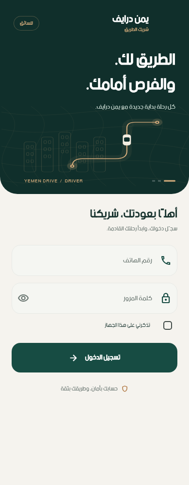
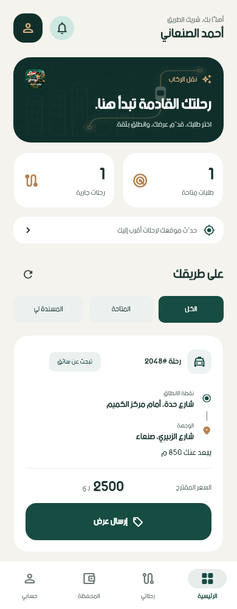
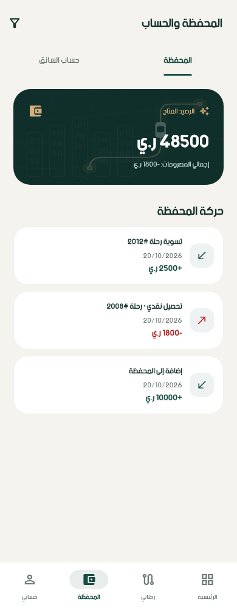
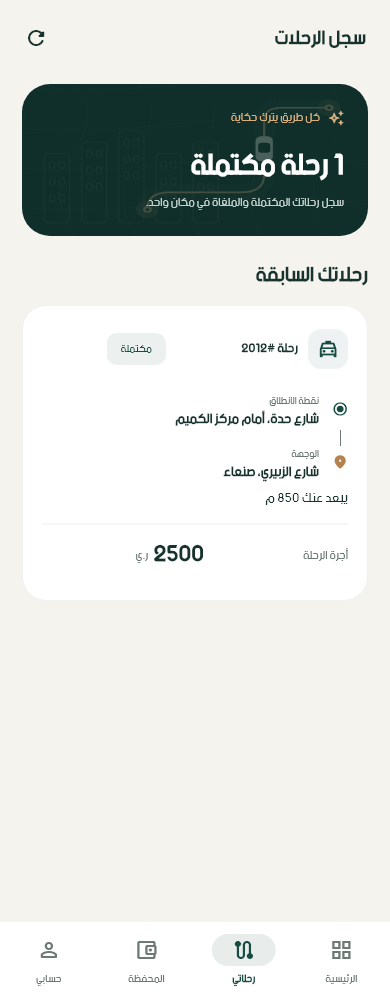
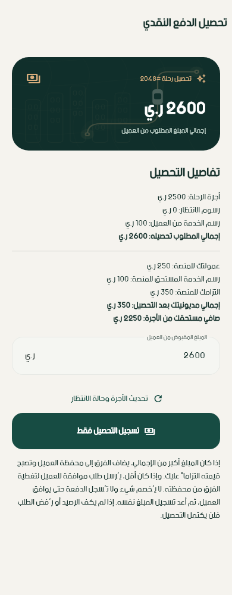

بيانات الصور تجريبية للاختبار. هذه الصفحة معرض صور؛ تسجيل الدخول والعمل الفعلي يتمان من التطبيق.





أخضر داكن، تفاصيل نحاسية، ومساحات هادئة تضع الرحلة في المقدمة. صور فعلية من واجهات التطبيق الجديد.
بيانات الصور تجريبية للاختبار. هذه الصفحة معرض صور؛ تسجيل الدخول والعمل الفعلي يتمان من التطبيق.




